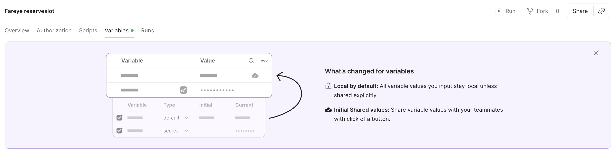

We Talk About Bruno
One morning I opened Postman and my work was gone. Blank. The service was down, my collection lived on their servers, and there was nothing to do but wait. It wasn't even the first time.
For years my job has meant talking to other people's servers — asking a shop's checkout for a price, telling a payment system to capture a charge, poking a warehouse to reserve a slot. You don't do that by hand each time. You save the request once — the address, the exact wording, the passwords — and keep it, like a bookmark that does something when you click it. A folder of those bookmarks is a collection. The tool most of us use to keep them is called Postman.
Over a decade I'd built up around eighty of these collections. They were the memory of every integration I'd ever debugged. And they lived in Postman's cloud.
Couldn't load request
Twice, that arrangement bit me.
The first time, I clicked a saved request and it refused to open — couldn't load request — and I spent an afternoon coaxing my own workspace back to life. The second time was the blank morning: Postman's servers were down, and my collection simply wasn't there. Not lost, exactly. Out of reach. Which, when you need it, is the same thing.
Work you can't reach isn't yours. That was the lesson, and I half-learned it.
The half-hearted hoard
So I started hoarding. Every so often I'd export a collection to a folder on my laptop — ~/postman — as a plain backup. A file I could hold onto no matter what their servers did.
The trouble with backing up by hand is that you don't. The dates on those files tell the story — a burst in September 2022, then a scatter of one-offs whenever fear happened to strike. One lonely full export in 2025. The backup habit of someone who means well and forgets. If Postman had gone down again, I'd have restored my work from years ago.
I wasn't safe. I was one outage away from getting burned a third time.
A dog called Bruno
Then I found Bruno.
Bruno is another tool for keeping these collections — but built on the opposite bet. Where Postman keeps your work on its servers, Bruno keeps it as plain text files, right there on your own disk. Its whole pitch is what people call Git-first. Git is a time machine for files: it remembers every version, lets you undo, branch off to try something risky, and roll back if it breaks — all on your own machine, nothing uploaded anywhere. That's exactly the guarantee I'd been failing to give myself by hand. Bruno would give it to me for free, on every save.
So I decided to move all eighty collections over.
The move had a catch. Postman used to have an "export everything" button and has since removed it. To get my own collections out in bulk, I went through their programming interface — the back door meant for machines — and pulled them one by one in a script. An hour later all eighty sat in a new folder as files I owned. I opened them in Bruno and there they were.
Most of them were a mess of near-duplicates with names like "version 1.13" and "version 1.16." That's not sloppiness — it's a scar. A vendor kept sending me new versions of a collection and refused to take my edits back into theirs, so every time they sent one I saved a fresh dated copy rather than lose the test queries I'd added. My garbage. But it's my garbage, and now it was finally somewhere I could search it.
Burned again, while running from the fire
And then Postman burned me a third time — as I was leaving.
Some of my collections came across looking hollow. The requests were there, but the fill-in-the-blanks they relied on — the server address, an ID, a key — were empty. Postman had quietly changed a default: the values you type into those blanks are now private, and private values don't come out in an export. So my clean bulk pull had silently left the most important parts behind.

The fire I was fleeing had followed me out the door. So I wrote a small script that walks every collection and lists which blanks are used but never filled — a map of what didn't survive the crossing. Now I could copy those few values over by hand instead of hitting each hole the next time I ran a request. The list was far shorter than I'd feared. The move started to feel like it might actually work.
The one thing you must never commit
Which brought me to the part I'd been dreading.
Some of those blanks aren't addresses or IDs. They're secrets — production passwords and keys that let a request act as a real system against a real customer. And Git, my new time machine, wants to remember everything forever. Secrets are the one thing you must never, ever hand to a system that remembers forever.
A second edge made it sharper. I don't do this work alone anymore — an AI assistant reads my files as we work. Committing secrets wouldn't just risk them leaking outward someday; it would lay them in front of the assistant, every session. Two reasons, same conclusion: the secrets could not go in as plain text.
But I still wanted the benefit of Git for them — versioning, carrying the whole thing between my two laptops, rebuilding a fresh copy whenever I need one. I wanted secrets in Git on purpose. I just wasn't allowed to want it the obvious way.
The lockbox with one key
The way out was to put the secrets into the repository — the folder Git watches — but locked.
The values live in a small file per project, and I seal that file with an encryption tool called age — think of it as a lockbox that only opens with one key. The sealed lockbox goes into Git; it's just scrambled bytes, useless to anyone reading the history, useless to the AI. The one key that opens it stays on my machine, in a file Git is told to ignore, so it never travels with the rest. Carry the repository to my other laptop, unlock once with that key, and every secret is there. Lose the laptop and the repository leaks — the thief gets a lockbox and no key.
I added two guardrails on top. A check runs on every commit — every snapshot Git records — and refuses it if anything inside looks like a naked secret. And I permanently switched off the ability to upload this repository anywhere — it is local-only, by construction, not by discipline. The whole point was to stop relying on my own good habits, which the ~/postman folder proved I don't have.
One wrinkle shaped the whole design. A secret unlocked this way is readable when a request uses it directly — but not from inside the little scripts a collection can run to, say, fetch a login token first. Those scripts run in a sandbox, a sealed-off room, and the room can't see the unlocked value. So the rule became: secrets feed requests, never scripts. I rebuilt a couple of collections that fetched their own tokens in a script to use a request-level login instead. Annoying, but honest — the constraint was real, so I built around it rather than knock a hole in the wall I'd just raised.
The error sits in front of the computer
Bruno had quirks of its own.
The one that cost me real time: when I added collections by dropping files on disk, a running Bruno kept insisting there were no environments — no saved sets of addresses, IDs, and keys to fill the blanks. Reloading didn't help. Switching workspaces didn't help. Only fully quitting and relaunching made it notice the new files — it reads them once when it starts and then stops looking. Half an hour of my life went to learning that.
And the oldest bug in the trade got me too. I sat staring at a request that wouldn't pick up a value I'd clearly just entered, convinced Bruno was broken — until I realized I'd typed it and never hit save. Same gotcha as Postman. The error, as it usually does, sat in the chair in front of the computer.
My garbage, but it's good
I open one Bruno workspace — one project window — and all eighty collections are there — a decade of integrations, on my own disk, nothing on anyone's server. Every change is remembered and undoable. The secrets ride along, sealed, openable on either laptop with a single key. No morning outage can make my own work vanish on me again.
At one point during the move I caught myself typing "this is so much fun" into the terminal. It was. Not because any one piece was clever — the pieces are small — but because a worry I'd carried quietly for years was finally handled, in files I could see and hold.
Bruno isn't a saint about it. The free version nudges you toward paying, and it caps you at two open workspaces at once.
But two is all I need — the built-in default, plus one of my own — and swapping takes removing one and adding the next. It's the WinRAR model: the old file-zipping app with the endless "please buy me" trial everyone has clicked past for twenty years. A tiny, harmless nag, on a tool that keeps working perfectly whether you pay or not. I can live with a polite cough forever.
Why I'll talk about Bruno
The relief is only half of it.
I'm in charge of my data now. The collections are mine, on my disk, and they cannot vanish for the old reasons — not to an outage, not to a service shutting down, not to a company deciding my export button was a feature it would rather remove. Even the fear underneath the fear is gone: it's all plain text files in JSON and YAML — the boring, open formats the whole industry reads. If Bruno itself vanished tomorrow, I'd point the next tool at the same files and carry on. My work no longer depends on any one company staying alive, or staying kind.
Everyone knows the song where they don't talk about Bruno. I'll talk about Bruno. He handed me back the keys to my own work — and this time, nobody else gets to take them.